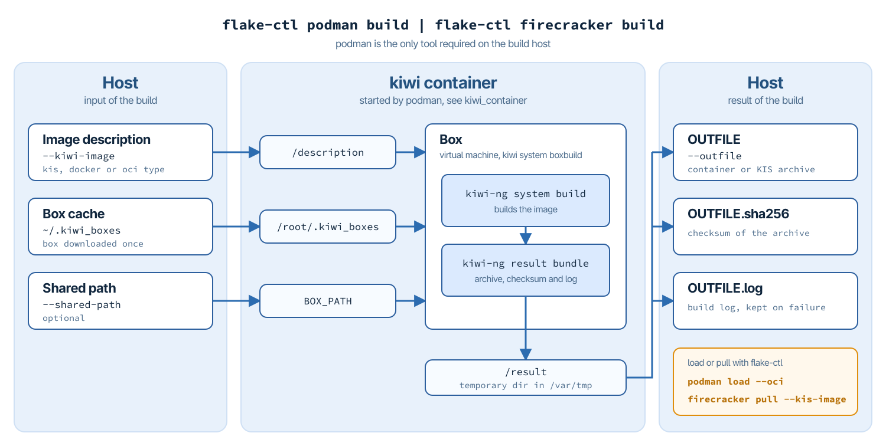

11. How To Build Your Own App Images
Hint
Abstract
This chapter explains how the container and VM images the flakes of this guide are based on are built, and how to build your own.
The container and VM images used in this guide are built with KIWI. Every image is described by a KIWI image description, and the descriptions for all images used in this guide are part of the appstore in the Flake Pilot repository:
https://github.com/OSInside/flake-pilot/tree/main/appstore/podman for container images, published at https://gallery.ecr.aws/b9k1j9y6?page=1
https://github.com/OSInside/flake-pilot/tree/main/appstore/firecracker for VM images, published at https://ddrasqgvrmpt8.cloudfront.net
They can be used as they are, or as a starting point for your own images.
KIWI is also the tool of choice for the two image types which are specific to Flake Pilot:
Delta containers, which carry only the difference to a base container and are used with the
--baseoption offlake-ctl podman register, see Delta Containers and An Editor as a Delta Container.KIS images, the kernel/initrd/rootfs archives pulled with
flake-ctl firecracker pull --kis-image, see Applications From a Virtual Machine.
11.1. Build Commands
flake-ctl provides a build command for each of the two image kinds:
flake-ctl podman buildbuilds container images, from image descriptions of the KIWIdockerorociimage type.flake-ctl firecracker buildbuilds VM images, from image descriptions of the KIWIkisimage type.
Both commands take the path of the image description and the name of the file to store the resulting image archive in:
flake-ctl podman build \
--kiwi-image /path/to/image/description \
--outfile /path/to/result
The only tool the build host requires for this is podman. KIWI and everything else the build needs is provided by the KIWI container and the box it starts. Nothing of it is installed on the host, and the host does not need to run the distribution the image is built for.
11.1.1. How the Build Works

A build takes the following steps:
flake-ctl starts the KIWI container through podman. The image description, the box cache
~/.kiwi_boxesand an optional shared path are mounted into the container, along with a temporary directory below/var/tmpfor the result.In the container,
kiwi system boxbuildstarts the box, a small virtual machine. The box is downloaded once to~/.kiwi_boxesand reused by later builds. By default thetumbleweedbox is used. The box runs with KVM acceleration if the host provides it.In the box, KIWI builds the image and bundles the result into the temporary directory: the image archive, its checksum and the log of the build.
flake-ctl moves the image archive to
OUTFILEand creates the sha256 checksum fileOUTFILE.sha256next to it, which allows to verify the archive and makes a KIS image ready to be pulled withflake-ctl firecracker pull --kis-image. The log of the build is kept asOUTFILE.log, also if the build fails. The temporary directory is deleted.
The box and its resources are selected by the options of
kiwi system boxbuild, which both commands provide under the same
name, for example:
flake-ctl podman build \
--kiwi-image /path/to/image/description \
--outfile /path/to/result \
--box universal --box-smp-cpus 2 --box-memory 2048
The KIWI container is public.ecr.aws/b9k1j9y6/kiwi:latest. Another
container can be configured with kiwi_container in
/etc/flakes.yml. For all options see
man flake-ctl-podman-build and man flake-ctl-firecracker-build.
11.1.2. Building Container Images
The container images for podman are in appstore/podman, grouped
in subdirectories such as ai and cloudsdk. Their descriptions
use the KIWI docker image type. flake-ctl podman build accepts
descriptions of the docker and oci image types:
flake-ctl podman build \
--kiwi-image appstore/podman/ai/claude \
--outfile /var/tmp/claude.docker.tar
The result is a container archive, which can be loaded into the local container storage and then registered as a flake as described in Applications From a Container:
flake-ctl podman load --oci /var/tmp/claude.docker.tar
The image description is shared with the box at /description.
Data outside of the description directory is only available in the
box if it is shared with the --shared-path option. The images in
appstore/podman/cloudsdk for example share a repository with the
SLES release package. Their descriptions link to it through the
relative symlink release -> ../.sle16/release, which resolves to
/.sle16/release in the box. With HOST_PATH:BOX_PATH the
repository is shared at exactly this location:
flake-ctl podman build \
--kiwi-image appstore/podman/cloudsdk/aws \
--outfile /var/tmp/aws.docker.tar \
--shared-path appstore/podman/cloudsdk/.sle16:/.sle16
Without a BOX_PATH, the shared path is available at the same
location in the box as on the host.
11.1.3. Building VM Images
The VM images for firecracker are in appstore/firecracker. Their
descriptions use the KIWI kis image type, which is the type
flake-ctl firecracker build expects. The result is a KIS archive
containing the rootfs, the kernel and the initrd:
flake-ctl firecracker build \
--kiwi-image appstore/firecracker/claude \
--outfile /var/tmp/claude.kis
With the checksum file created next to it, the archive can be pulled into the local firecracker registry right away and used as described in Applications From a Virtual Machine:
flake-ctl firecracker pull --name claude \
--kis-image /var/tmp/claude.kis
To make the image available to other hosts, publish the archive on a
web server together with its .sha256 checksum file and pull it
from there by its https URL.
11.2. Delta Containers
A regular container image contains the complete root tree of the application, including all the parts it shares with other containers. A delta container contains only the files that differ from a given base container. The base is pulled to the host once and shared by all delta containers built against it, so every additional application only adds its own data.
A delta container is not functional on its own. To run it, the base
container is mounted and the delta container is layered on top of it.
Flake Pilot does this in the provision step of podman flakes that
were registered with the --base option, see
An Editor as a Delta Container. Further layers between the base and
the delta can be added with the --layer option.
In KIWI, a delta container is a container image built from a base
container with the delta_root attribute enabled:
<type image="oci"
derived_from="docker-archive:/path/to/basesystem.tar"
delta_root="true">
<containerconfig name="joe"/>
</type>
The derived_from attribute sets the base container, here given as
a docker archive type. This is the base the delta container must be used
with later. The derived_from value is passed along to skopeo copy
as such any skopeo supported source-image format/location can be used
to reference the base container.
A base container stored on the build host has to be made available
to the build in the box. Build the delta container with
flake-ctl podman build and share the directory of the base with
the --shared-path option. It is available at the same path in the
box as on the host:
flake-ctl podman build \
--kiwi-image /path/to/joe \
--outfile /var/tmp/joe.oci.tar \
--shared-path /path/to
With delta_root="true" KIWI puts only the differences to that base into
the resulting image. A config-overlay.sh script, if present in
the image description, runs at the end of the build and is the last
point at which the delta root tree can be changed.
Example delta containers built against a common basesystem container,
including the joe editor used in An Editor as a Delta Container,
can be found here: